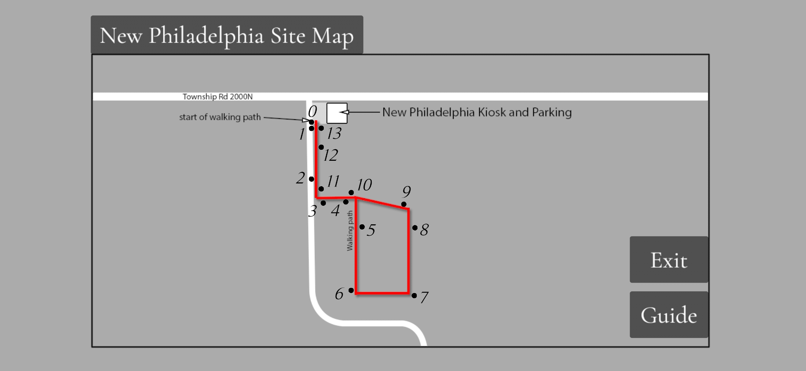

Welcome to the New Philadelphia AR website.
Select an option from the sidebar to watch a video recording of each scene.
0. Welcome to New Philadelphia
1. The McWorter Family Arrives
2. Shoemaker Spaulding Burdick
3. John Bixler and a John Deere
4. Reverend Luce, Schoolhouse
5. The Post Office
6. Louisa McWorter's House
7. McWorter Family Cemetery
8. Martin and Goerge Kimbro
11. Hannibal and Naples Railroad
12. The Blacksmith Shop
13. Louisa McWorter's House